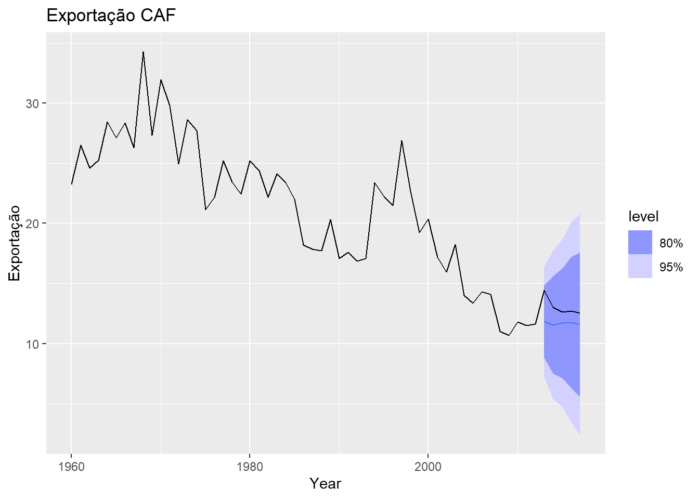

## Bibliotecas de séries temporais
library(TSA)
library(forecast)
library(fpp3)Modelo ARIMA
Aplicação do modelo ARIMA
Descreveremos a modelagem ARIMA usando dados mensais de emprego nos EUA para empregos nas áreas de lazer e hotelaria de janeiro de 2001 a setembro de 2019, como podemos ver a seguir.
serie <- global_economy %>%
filter(Code == "CAF")
head(serie) # A tsibble: 6 x 9 [1Y]
# Key: Country [1]
Country Code Year GDP Growth CPI Imports Exports Population
<fct> <fct> <dbl> <dbl> <dbl> <dbl> <dbl> <dbl> <dbl>
1 Central African Re… CAF 1960 1.12e8 NA NA 34.2 23.3 1503508
2 Central African Re… CAF 1961 1.23e8 4.95 NA 35.8 26.5 1529227
3 Central African Re… CAF 1962 1.24e8 -3.71 NA 37.7 24.6 1556661
4 Central African Re… CAF 1963 1.29e8 -0.707 NA 38.5 25.2 1585763
5 Central African Re… CAF 1964 1.42e8 2.08 NA 40.8 28.4 1616516
6 Central African Re… CAF 1965 1.51e8 0.948 NA 37.7 27.1 1648833tail(serie)# A tsibble: 6 x 9 [1Y]
# Key: Country [1]
Country Code Year GDP Growth CPI Imports Exports Population
<fct> <fct> <dbl> <dbl> <dbl> <dbl> <dbl> <dbl> <dbl>
1 Central African Re… CAF 2012 2.17e9 4.11 107. 21.8 11.6 4490416
2 Central African Re… CAF 2013 1.52e9 -36.7 109. 25.0 14.5 4499653
3 Central African Re… CAF 2014 1.70e9 1.04 136. 37.6 13.0 4515392
4 Central African Re… CAF 2015 1.58e9 4.80 187. 34.6 12.6 4546100
5 Central African Re… CAF 2016 1.76e9 4.53 NA 30.0 12.7 4594621
6 Central African Re… CAF 2017 1.95e9 4.30 NA 31.8 12.5 4659080Como a série é claramente não estacionária, vamos aplicar o operador diferença:
#### Comportamento da serie
plot_serie = serie %>%
autoplot(Exports) +
labs(title="Exportação de produtos",
y="")
### ACF e PACF das series
acf = serie %>%
ACF(Exports, lag_max = 20) %>%
autoplot() + labs(title="ACF")
pacf = serie %>%
PACF(Exports, lag_max = 20) %>%
autoplot() + labs(title="PACF")
gridExtra::grid.arrange(plot_serie, acf, pacf,layout_matrix=rbind(c(1,1),c(2,3) ))
#### Verificando se a série é estacionária
serie %>%
features(Exports, unitroot_kpss)# A tibble: 1 × 3
Country kpss_stat kpss_pvalue
<fct> <dbl> <dbl>
1 Central African Republic 1.28 0.01Como podemos ver, a série é não estacionária, assim é necessário aplicar o perador diferença para torná-la estacionária.
### Aplicando o operador diferença
plot_serieD = serie %>%
autoplot( difference(Exports) ) +
labs(title="Exportação",
y="")
### ACF e PACF das series
acf_D = serie %>%
ACF(difference(Exports), lag_max = 20) %>%
autoplot() + labs(title="ACF")
pacf_D = serie %>%
PACF(difference(Exports), lag_max = 20) %>%
autoplot() + labs(title="PACF")
gridExtra::grid.arrange(plot_serieD, acf_D, pacf_D,layout_matrix=rbind(c(1,1),c(2,3) ))# Definindo a base de dados em treinamento e teste
train <- serie %>%
filter_index("1981" ~ "2012")
tail(train)# A tsibble: 6 x 9 [1Y]
# Key: Country [1]
Country Code Year GDP Growth CPI Imports Exports Population
<fct> <fct> <dbl> <dbl> <dbl> <dbl> <dbl> <dbl> <dbl>
1 Central African Re… CAF 2007 1.70e9 4.61 87.1 23.5 14.1 4275800
2 Central African Re… CAF 2008 1.99e9 2.05 95.2 23.4 11.0 4345386
3 Central African Re… CAF 2009 1.98e9 1.71 98.5 23.2 10.7 4404230
4 Central African Re… CAF 2010 1.99e9 3.05 100 26.5 11.8 4448525
5 Central African Re… CAF 2011 2.20e9 3.30 101. 22.0 11.5 4476153
6 Central African Re… CAF 2012 2.17e9 4.11 107. 21.8 11.6 4490416test <- serie %>%
filter_index("2013" ~ . );test# A tsibble: 5 x 9 [1Y]
# Key: Country [1]
Country Code Year GDP Growth CPI Imports Exports Population
<fct> <fct> <dbl> <dbl> <dbl> <dbl> <dbl> <dbl> <dbl>
1 Central African Re… CAF 2013 1.52e9 -36.7 109. 25.0 14.5 4499653
2 Central African Re… CAF 2014 1.70e9 1.04 136. 37.6 13.0 4515392
3 Central African Re… CAF 2015 1.58e9 4.80 187. 34.6 12.6 4546100
4 Central African Re… CAF 2016 1.76e9 4.53 NA 30.0 12.7 4594621
5 Central African Re… CAF 2017 1.95e9 4.30 NA 31.8 12.5 4659080Para realizar o ajuste do modelo SARIMA vamos usar a função model da seguinte maneira:
#### Comportamento da serie
plot_serie = train %>%
autoplot(Exports) +
labs(title="Central African Republic exports",
y="% of GDP")
### ACF e PACF das series
acf = train %>%
ACF(Exports, lag_max = 20) %>%
autoplot() + labs(title="ACF")
pacf = train %>%
PACF(Exports, lag_max = 20) %>%
autoplot() + labs(title="PACF")
gridExtra::grid.arrange(plot_serie, acf, pacf,layout_matrix=rbind(c(1,1),c(2,3) ))
#### Verificando se a série é estacionária
train %>%
features(Exports, unitroot_kpss)# A tibble: 1 × 3
Country kpss_stat kpss_pvalue
<fct> <dbl> <dbl>
1 Central African Republic 0.593 0.0233#### Aplicando o operador diferença
plot_serieD = train %>%
autoplot( difference(Exports) ) +
labs(title="Central African Republic exports",
y="% of GDP")
### ACF e PACF das series
acf_D = train %>%
ACF(difference(Exports), lag_max = 20) %>%
autoplot() + labs(title="ACF")
pacf_D = train %>%
PACF(difference(Exports), lag_max = 20) %>%
autoplot() + labs(title="PACF")
gridExtra::grid.arrange(plot_serieD, acf_D, pacf_D,layout_matrix=rbind(c(1,1),c(2,3) ))Warning: Removed 1 row containing missing values or values outside the scale range
(`geom_line()`).#### Verificando se a série diferenciada é estacionária
train %>%
features(difference(Exports), unitroot_kpss)# A tibble: 1 × 3
Country kpss_stat kpss_pvalue
<fct> <dbl> <dbl>
1 Central African Republic 0.0889 0.1Para a escolha do melhor modelo vamos usar o critério de seleção AICc ou BIC uando a função glance.
#### FORECAST
caf_fit <- train %>%
model(arima210 = ARIMA(Exports ~ pdq(2,1,0)),
arima012 = ARIMA(Exports ~ pdq(0,1,2)),
arima212 = ARIMA(Exports ~ pdq(2,1,2)),
rb = ARIMA(Exports ~ pdq(0,1,0)),
auto = ARIMA(Exports ) )
caf_fit %>% select(auto)# A mable: 1 x 1
auto
<model>
1 <ARIMA(0,1,0)>## Desempenho dos modelos
glance(caf_fit)# A tibble: 5 × 9
Country .model sigma2 log_lik AIC AICc BIC ar_roots ma_roots
<fct> <chr> <dbl> <dbl> <dbl> <dbl> <dbl> <list> <list>
1 Central African Rep… arima… 6.03 -70.9 148. 149. 152. <cpl> <cpl>
2 Central African Rep… arima… 6.28 -71.5 149. 150. 153. <cpl> <cpl>
3 Central African Rep… arima… 5.53 -68.6 147. 150. 154. <cpl> <cpl>
4 Central African Rep… rb 6.23 -72.3 147. 147. 148. <cpl> <cpl>
5 Central African Rep… auto 6.23 -72.3 147. 147. 148. <cpl> <cpl> #### Comportamento dos residuos
caf_fit %>%
select(rb) %>%
gg_tsresiduals()# GERANDO UMA PREVISAO h = 2 passos
caf_fc <- caf_fit %>% forecast(h = 5)
caf_fc# A fable: 25 x 5 [1Y]
# Key: Country, .model [5]
Country .model Year Exports .mean
<fct> <chr> <dbl> <dist> <dbl>
1 Central African Republic arima210 2013 N(12, 6) 11.7
2 Central African Republic arima210 2014 N(12, 9.4) 11.6
3 Central African Republic arima210 2015 N(12, 12) 11.6
4 Central African Republic arima210 2016 N(12, 14) 11.7
5 Central African Republic arima210 2017 N(12, 17) 11.7
6 Central African Republic arima012 2013 N(12, 6.3) 11.6
7 Central African Republic arima012 2014 N(12, 10) 11.6
8 Central African Republic arima012 2015 N(12, 14) 11.6
9 Central African Republic arima012 2016 N(12, 17) 11.6
10 Central African Republic arima012 2017 N(12, 21) 11.6
# ℹ 15 more rows# Grafico da serie com as previsoes
caf_fc %>% filter( (.model == 'rb') | (.model == 'arima212') ) %>%
autoplot(serie, level = NULL) +
labs(
y = "Exportações",
title = "Previsão"
) +
guides(colour = guide_legend(title = "Forecast"))accuracy(caf_fc, test)# A tibble: 5 × 11
.model Country .type ME RMSE MAE MPE MAPE MASE RMSSE ACF1
<chr> <fct> <chr> <dbl> <dbl> <dbl> <dbl> <dbl> <dbl> <dbl> <dbl>
1 arima012 Central Africa… Test 1.44 1.60 1.44 10.7 10.7 NaN NaN 0.121
2 arima210 Central Africa… Test 1.41 1.58 1.41 10.6 10.6 NaN NaN 0.127
3 arima212 Central Africa… Test 1.38 1.53 1.38 10.3 10.3 NaN NaN 0.212
4 auto Central Africa… Test 1.42 1.59 1.42 10.6 10.6 NaN NaN 0.120
5 rb Central Africa… Test 1.42 1.59 1.42 10.6 10.6 NaN NaN 0.120Portanto, o modelo auto, que representa uma ARIMA \((2,1,0)(1,1,1)_{12}\) foi o melhor modelo pois apresenta o menor AICc.
Previsão no R
forecast(caf_fit, h=6) %>%
filter(.model=='auto') %>%
autoplot(serie) +
labs(title = "Desemprego: Lazer e hotelaria",
y="Número de pessoas (Milhões)")